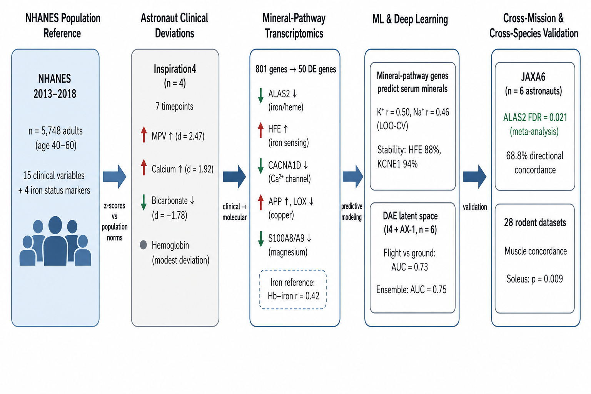

Astronaut Mineral and Dietary Analysis
Supplementary Section: Population-Referenced Analysis of Astronaut Clinical Markers
This repository contains the analysis code, execution traces, data, and figures for the investigation into spaceflight mineral and dietary impacts.
Graphical Abstract

Repository Contents
- Manuscript text integration
- Data and Figures directories
- Zenodo package